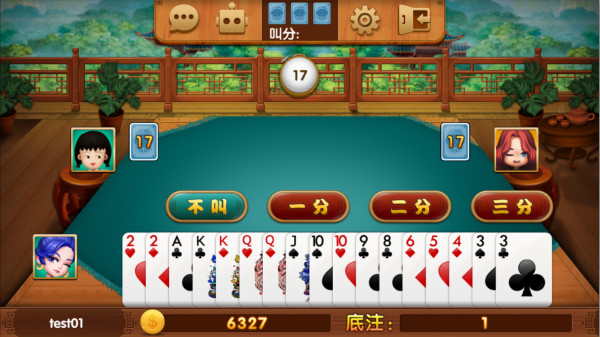
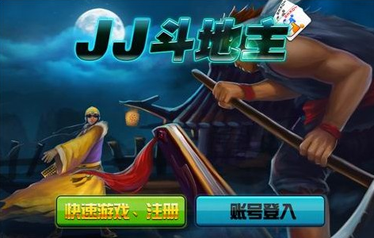
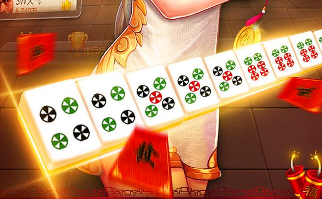

棋牌行业是一个巨大的市场。有资料显示，受监管的棋牌游戏市场价值至少达到500亿美元，而未受监管的至少是受监管棋牌游戏的10倍以上。
去年8月份，我作为合平资产投资总监，做了一些调研和估算。全国661个县市，每个县市至少有两款以上的棋牌游戏在竞争。光一个湖南省，把服务器托管在阿里云的棋牌游戏就多达5000多家，而浙江某地市有文网文备案的棋牌游戏公司早就多达400多家了。
由此可见，市场竞争非常激烈。棋牌游戏发展到今天，白热化、同质化竞争已经不可避免。
目前，国内做棋牌游戏开发的公司加起来不下2000家。而且，据我所知，不少知名棋牌游戏公司用的代码都是第三方软件服务公司做的，无论是功能、界面甚至是玩法上，都严重同质化。
然而，想要抢占市场，甚至脱颖而出，创新肯定是行之有效的方法之一。至少在我看来，闲徕互娱成功的重要因素之一就是创新。正是因为闲徕互娱2016年的一次创新，推出了房卡模式，从而影响了地方性玩法的棋牌游戏的集中发展。也正是因为闲徕互娱的20亿元的资本并购，紧接着棋牌行业接二连三了迎来了资本并购潮，让棋牌行业成了一个小小的风口。
那么问题来了，棋牌游戏的玩法相对固定，对于大多数创业者来说，要满足更多用户的需求，创新之路在哪呢？
玩法上创新：规则上做加减法
我认为，棋牌游戏的创新，首先还是在玩法上。
棋牌游戏玩家对于玩法的喜好是不一样的。就拿麻将来说，就有很多种玩法。主流的基本上在腾讯棋牌上都有体现，如四川的“血战到底”，贵州的捉鸡麻将，杭州麻将，广东麻将，湖南转转麻将等。
甚至，很多地方，一个村庄就存在几种麻将玩法，很难说到底什么麻将才是最好的。有些人喜欢做大牌，有些人喜欢快速胡牌，而有些人喜欢连庄，有些人却喜欢自顾自的打法的。这么多玩法的麻将，无非也是一次次创新才有的规则。
此外，游戏是一样的，但不同玩家对于游戏的需求其实是不一样的。重度玩家一般喜欢玩法复杂，倍率高，对出牌的精准度要求极高；而初学者和轻度玩家则喜欢玩法简单，出错牌损失不大的玩法。
所以，任何棋牌游戏的玩法在大的规则上，相对来说是固定的；小的规则上还是可以做到“花样百出”。
例如，有游戏平台给规则做减法，无论什么样的牌型都只比大小，而不是像杭州的红波浪（其他地方叫十三水或者十三道）那样，根据不同的牌型有不同的赔率。
因为，不少玩家知道牌型的摆法，却不是很明白不同牌型的得分情况。如果不同牌型有不同赔率，对于小白玩家，会无形中提高游戏的准入门槛，用户教育成本过高。
据我了解，就这么一个小小的创新，该游戏平台就吸引了杭州绍兴一带众多的小白玩家，至少，这就成功了第一步。
以上是在玩法上做减法的例子。接下来讲讲在玩法上做加法的案例。我主要以斗地主为典型来剖析。

斗地主在玩法上，从3个玩家一副牌演变到4个玩家2副牌、甚至三副牌，还参考麻将规则出了癞子（癞子可替代任何牌）斗地主。
这里我着重说下一种斗地主玩法，俗称满天飞。在皖南山区，早些年很多人以种植香菇为生。三五成群扎堆在各个城市，闲着无事，就玩斗地主。斗地主规则简单，很多牌型不能出，出牌慢，他们就自己定规则玩。这样一来，因为满足了玩家的需求，受众群体越来越多。至少我知道皖南某县基本上玩斗地主，已经不玩传统玩法了，就玩这种俗称的“满天飞”玩法。
我们就这两种玩法做下简单对比。传统的斗地主，只有大小王、4张同样的牌是炸弹，基本上一副牌发好后，牌型组合基本上已经定死了。
然而，满天飞玩法中，除了原有的炸弹，还有4连对及以上，通天顺，同花顺，2连3+2连对（如333+444+77+88），3连3等。这种玩法中，甚至还加入了一张癞子牌。这样，整副牌中，炸弹就多起来了，不确定性就更多了。
另外，传统的斗地主，3张同样的牌只能带一个对子或者一张单牌；而满天飞玩法中，3张同样的牌可以带2张牌（无论是对子还是散牌）。
这样，所有玩家手上的散牌相对就少了，出牌速度就快了。而且因为有不同的炸弹类型，牌型组合也至关重要，也因为炸弹多了，倍率自然就加大了。这样的斗地主，自然而然增加了棋牌游戏的博弈性。
毫不夸张地说，香菇棚里的一次小小创新，改变了一个地区的整体玩法。
模式上创新：要抓住用户痛点
我认为，棋牌游戏的创新还可以体现在模式上。JJ的成功就源于模式上的创新。JJ把传统的对战模式改成了紧张刺激的竞技模式，从而吸引了众多玩家，奠定了市场上TOP5的行业地位。

那么，在竞技模式上是否还有创新可循呢？
我了解到某平台，用的是类似于JJ竞技模式的闯关模式。玩家每闯一关，就可以获得相应的积分或者是金币；而闯过特定的关卡，可以获得丰厚的实物奖品；闯关失败了，还可以在游戏平台购买复活卡，对局同一次竞赛。
这里就抓住了人性的弱点，或者说是用户的痛点。我和许多游戏玩家有过沟通，发现一个特点，越是付费玩家，用户粘性越强。为什么呢？他们的回答是这样的，我都已经花了钱了，如果不继续花钱，之前花的钱不就白花了吗？当玩家第一次购买复活卡又失败后，继续购买复活卡的概率几乎为100%。
这让我想起以前玩的QQ癞子斗地主，每天都会免费送4次1000的欢乐豆，所以我几乎每天中午用闲暇时间去玩，几乎不付费。
偶尔我侥幸用免费的欢乐豆晋级决赛，在输了某一局比赛而欢乐豆不足时，这个时候痛点来了：不付费，失去继续比赛的资格，没有任何机会获得比赛胜利后的奖励。所以，当我觉得获胜的机会比较大时，我还是会选择付费。
久而久之，我发觉，在这款游戏中，还是下了血本。
关于运营模式这方面，具体的运营细节，我就不赘述了。我只是阐述一个创新思路。其他的游戏厂家可以循着这个思路继续发扬光大。从现有的案例来看，模式上的点滴微创新，都有可能引发爆点，使你的游戏成为爆款。所以，千万不要小瞧微创新。
技术上创新：区块链技术落地化
最后说的一种创新，是技术上的创新。
众所周知，2017年开始，区块链大热，而棋牌游戏本身就是非常好的应用场景。
目前，棋牌游戏都是平台中心化的运营方式，不透明的算法和不公开的操作，都有可能让用户、甚至平台本身蒙受损失。
而区块链技术与线上棋牌游戏结合，将传统游戏运营中的黑箱操作、数值算法不透明、玩家地位不对等等问题完善的解决。
区块链的去中心化技术，可以使传统棋牌平台的信任体系问题，迎刃而解。在具体操作落地钟，为了避免主链货币波动，导致用户的不确定增大，需要设计独特的代币体系。
所有在公链上的用户，均可通过公链的钱包参与游戏。参与游戏的用户会以提交信息的形式，将自己的公钥及钱包信息时间戳等相关资料打包，由私钥签名后，将信息广播到矿工节点。矿工节点会根据区块信息审核对应地址，是否有足够的币参与牌局，并将信息打包到区块中进行分配牌局。
公链将会公开所有的游戏行为、操作、以及结果数据，保证游戏机制的透明化，完全做到核心资料的公开透明，可查询历史区块，复盘任意牌局的详细流程及结果资料。
节点、牌桌分配都按照随机公平算法进行分配，产生乱数随机，完全做到所有时间不可控，不可预知的原则。各节点及钱包应用在游戏内均依托智能合约执行。合约规则不可篡改，无需审核监管层，完成清算、约束、及惩罚流程。
不过，区块链技术的应用落地，应该还有很长的一段时间需要走，而且哪怕有想法，估计也只有大厂和资本追逐的游戏厂家，才可以去逐步落地。但那些小厂家也不要灰心。新技术的革新中处处都是机遇。只要敢想敢做，谁说你就不能成功呢。

综上所述，棋牌游戏的创新之路任重而道远。如果在玩法上创新，那么就要抓住规则上有待改善之处，激发玩家对游戏的喜爱；而在模式上创新，方法也很多，但万变不离其宗的是，一定要懂得用户的痛点在哪里；此外，在技术上创新，则需要创业者有灵敏的嗅觉，结合最新的科学技术，并将其应用落地。
而作为投资者而言，在上述三方面做得都足够优秀的项目，可以重点考察关注。在目前良莠不齐的棋牌游戏中，我相信，只要掌握上述三条标准，定能去粗存精，发现真正有价值的项目。祝各位好运。纹桃科技致力于棋牌游戏开发14年，拥有大量棋牌游戏开发运营经验和大批成功案例。
想开发一款迅速盈利的棋牌游戏，欢迎咨询热线电话：18711739336


游戏产品
PRODUCTS

售后服务
SERVICE

技术支持
TECHNOLOGY

运营指导
OPERATING